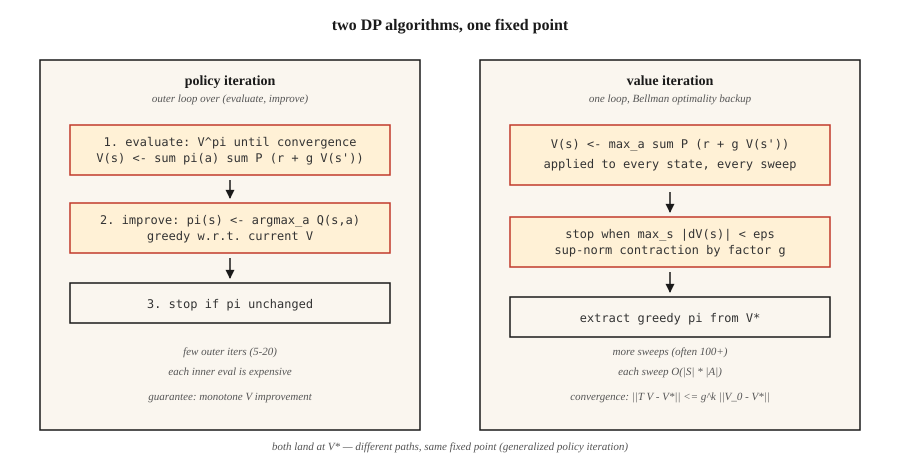

Dynamic Programming — Policy Iteration & Value Iteration
Dynamic programming is RL with cheating. You already know the transition and reward functions; you just iterate the Bellman equation until V or π stops moving. It is the benchmark every sampling-based method tries to approach.
- Type
- Build
- Languages
- Python
- Prerequisites
- Phase 9 · 01 (MDPs)
- Time
- ~75 minutes
#The Problem
You have an MDP with a known model: you can query P(s' | s, a) and R(s, a, s') for any state-action pair. An inventory manager knows the demand distribution. A board game has deterministic transitions. A gridworld is four lines of Python. You have a model.
Model-free RL (Q-learning, PPO, REINFORCE) was invented for the case where you don't have a model — you can only sample from the environment. But when you do have one, there are faster, better methods: dynamic programming. Bellman designed them in 1957. They still define correctness: when people say "optimal policy for this MDP," they mean the policy DP would return.
You need them in 2026 for three reasons. First, every tabular environment in RL research (GridWorld, FrozenLake, CliffWalking) is solved with DP to produce the gold-standard policy. Second, exact values let you debug sampling methods: if Q-learning's estimate for V*(s_0) disagrees with the DP answer by 30%, your Q-learning has a bug. Third, modern offline RL and planning methods (MCTS, AlphaZero's search, model-based RL in Phase 9 · 10) all iterate a Bellman backup over a learned or given model.
#The Concept

Two algorithms, both fixed-point iteration on Bellman.
Policy iteration. Alternates two steps until the policy stops changing.
- Evaluation: given policy
π, computeV^πby repeatedly applyingV(s) ← Σ_a π(a|s) Σ_{s',r} P(s',r|s,a) [r + γ V(s')]until it converges. - Improvement: given
V^π, makeπgreedy w.r.t.V^π:π(s) ← argmax_a Σ_{s',r} P(s',r|s,a) [r + γ V(s')].
Convergence is guaranteed because (a) each improvement step either keeps π the same or strictly increases V^π for some state, (b) the space of deterministic policies is finite. Usually converges in ~5–20 outer iterations even for large state spaces.
Value iteration. Collapses evaluation and improvement into one sweep. Apply the Bellman optimality equation:
V(s) ← max_a Σ_{s',r} P(s',r|s,a) [r + γ V(s')]
Repeat until max_s |V_{new}(s) - V(s)| < ε. Extract the policy at the end by taking the greedy action. Strictly faster per iteration — no inner evaluation loop — but typically needs more iterations to converge.
Generalized policy iteration (GPI). The unifying framing. Value function and policy are locked in a two-way improvement loop; any method that drives both toward mutual consistency (async value iteration, modified policy iteration, Q-learning, actor-critic, PPO) is an instance of GPI.
Why γ < 1 matters. The Bellman operator is a γ-contraction in the sup-norm: ||T V - T V'||_∞ ≤ γ ||V - V'||_∞. Contraction implies unique fixed point and geometric convergence. Drop γ < 1 and you lose the guarantee — you need a finite horizon or an absorbing terminal state.
#Build It
#Step 1: build the GridWorld MDP model
Use the same 4×4 GridWorld from Lesson 01. We add a stochastic variant: with probability 0.1 the agent slips to a random perpendicular direction.
SLIP = 0.1
def transitions(state, action):
if state == TERMINAL:
return [(state, 0.0, 1.0)]
outcomes = []
for direction, prob in action_probs(action):
outcomes.append((apply_move(state, direction), -1.0, prob))
return outcomestransitions(s, a) returns a list of (s', r, p). This is the entire model.
#Step 2: policy evaluation
Given a policy π(s) = {action: prob}, iterate the Bellman equation until V stops moving:
def policy_evaluation(policy, gamma=0.99, tol=1e-6):
V = {s: 0.0 for s in states()}
while True:
delta = 0.0
for s in states():
v = sum(pi_a * sum(p * (r + gamma * V[s_prime])
for s_prime, r, p in transitions(s, a))
for a, pi_a in policy(s).items())
delta = max(delta, abs(v - V[s]))
V[s] = v
if delta < tol:
return V#Step 3: policy improvement
Replace π with the greedy policy w.r.t. V. If π did not change, return — we are at the optimum.
def policy_improvement(V, gamma=0.99):
new_policy = {}
for s in states():
best_a = max(
ACTIONS,
key=lambda a: sum(p * (r + gamma * V[s_prime])
for s_prime, r, p in transitions(s, a)),
)
new_policy[s] = best_a
return new_policy#Step 4: stitch them together
def policy_iteration(gamma=0.99):
policy = {s: "up" for s in states()} # arbitrary start
for _ in range(100):
V = policy_evaluation(lambda s: {policy[s]: 1.0}, gamma)
new_policy = policy_improvement(V, gamma)
if new_policy == policy:
return V, policy
policy = new_policyTypical convergence on 4×4: 4–6 outer iterations. Outputs V*(0,0) ≈ -6 and a policy that strictly decreases the step count.
#Step 5: value iteration (the one-loop version)
def value_iteration(gamma=0.99, tol=1e-6):
V = {s: 0.0 for s in states()}
while True:
delta = 0.0
for s in states():
v = max(sum(p * (r + gamma * V[s_prime])
for s_prime, r, p in transitions(s, a))
for a in ACTIONS)
delta = max(delta, abs(v - V[s]))
V[s] = v
if delta < tol:
break
policy = policy_improvement(V, gamma)
return V, policySame fixed point, fewer lines of code.
#Pitfalls
- Forgetting to handle terminals. If you apply Bellman to an absorbing state, it still picks up a "best action" that changes nothing. Guard with
if s == terminal: V[s] = 0. - Sup-norm vs L2 convergence. Use
max |V_new - V|, not average. The theoretical guarantee is on the sup-norm. - In-place vs synchronous updates. Updating
V[s]in-place (Gauss-Seidel) converges faster than a separateV_newdict (Jacobi). Production code uses in-place. - Policy ties. If two actions have equal Q-value,
argmaxmay break ties differently each iteration, causing the "policy stable" check to oscillate. Use a stable tie-break (first action in fixed order). - State-space explosion. DP is
O(|S| · |A|)per sweep. Works up to ~10⁷ states. Beyond that, you need function approximation (Phase 9 · 05 onwards).
#Use It
In 2026, DP is the correctness baseline and the inner loop of planners:
| Use case | Method |
|---|---|
| Solve a small tabular MDP exactly | Value iteration (simpler) or policy iteration (fewer outer steps) |
| Verify a Q-learning / PPO implementation | Compare to DP-optimal V* on a toy environment |
| Model-based RL (Phase 9 · 10) | Bellman backup on a learned transition model |
| Planning in AlphaZero / MuZero | Monte Carlo Tree Search = async Bellman backup |
| Offline RL (CQL, IQL) | Conservative Q-iteration — DP with a penalty on OOD actions |
Every time someone says "the optimal value function," they mean "the DP fixed point." When you see V* or Q* in a paper, picture this loop.
#Ship It
Save as outputs/skill-dp-solver.md:
---
name: dp-solver
description: Solve a small tabular MDP exactly via policy iteration or value iteration. Report convergence behavior.
version: 1.0.0
phase: 9
lesson: 2
tags: [rl, dynamic-programming, bellman]
---
Given an MDP with a known model, output:
1. Choice. Policy iteration vs value iteration. Reason tied to |S|, |A|, γ.
2. Initialization. V_0, starting policy. Convergence sensitivity.
3. Stopping. Sup-norm tolerance ε. Expected number of sweeps.
4. Verification. V*(s_0) computed exactly. Greedy policy extracted.
5. Use. How this baseline will be used to debug/evaluate sampling-based methods.
Refuse to run DP on state spaces > 10⁷. Refuse to claim convergence without a sup-norm check. Flag any γ ≥ 1 on an infinite-horizon task as a guarantee violation.#Exercises
- Easy. Run value iteration on the 4×4 GridWorld with
γ ∈ {0.9, 0.99}. How many sweeps untilmax |ΔV| < 1e-6? PrintV*as a 4×4 grid. - Medium. Compare policy iteration vs value iteration on the stochastic GridWorld (slip probability
0.1). Count: sweeps, wall-clock time, finalV*(0,0). Which converges faster in iterations? In wall-clock? - Hard. Build modified policy iteration: in the evaluation step, run only
ksweeps instead of to convergence. PlotV*(0,0)error vskfork ∈ {1, 2, 5, 10, 50}. What does the curve tell you about the evaluation/improvement tradeoff?
#Key Terms
| Term | What people say | What it actually means |
|---|---|---|
| Policy iteration | "DP algorithm" | Alternating evaluation (V^π) and improvement (greedy π w.r.t. V^π) until the policy stops changing. |
| Value iteration | "Faster DP" | Bellman optimality backup applied in one sweep; converges to V* geometrically. |
| Bellman operator | "The recursion" | (T V)(s) = max_a Σ P (r + γ V(s')); a γ-contraction in sup-norm. |
| Contraction | "Why DP converges" | Any operator T with ||T x - T y|| ≤ γ ||x - y|| has a unique fixed point. |
| GPI | "Everything is DP" | Generalized Policy Iteration: any method driving V and π to mutual consistency. |
| Synchronous update | "Jacobi-style" | Use old V throughout a sweep; cleanly analyzable but slower. |
| In-place update | "Gauss-Seidel-style" | Use V as it's being updated; converges faster in practice. |
#Further Reading
- Sutton & Barto (2018). Ch. 4 — Dynamic Programming — the canonical presentation of policy iteration and value iteration.
- Bertsekas (2019). Reinforcement Learning and Optimal Control — rigorous treatment of contraction-mapping arguments.
- Puterman (2005). Markov Decision Processes — modified policy iteration and its convergence analysis.
- Howard (1960). Dynamic Programming and Markov Processes — the original policy iteration paper.
- Bertsekas & Tsitsiklis (1996). Neuro-Dynamic Programming — the bridge from DP to approximate-DP / deep RL used by every subsequent lesson.
Nice. That's 5 minutes of Reinforcement Learning behind you.
Continue to Monte Carlo Methods — Learning from Complete Episodes →